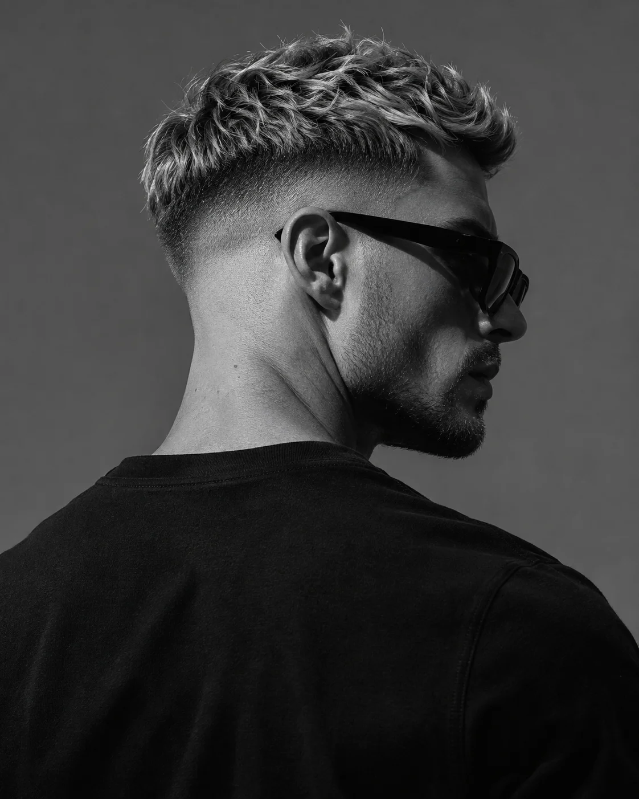
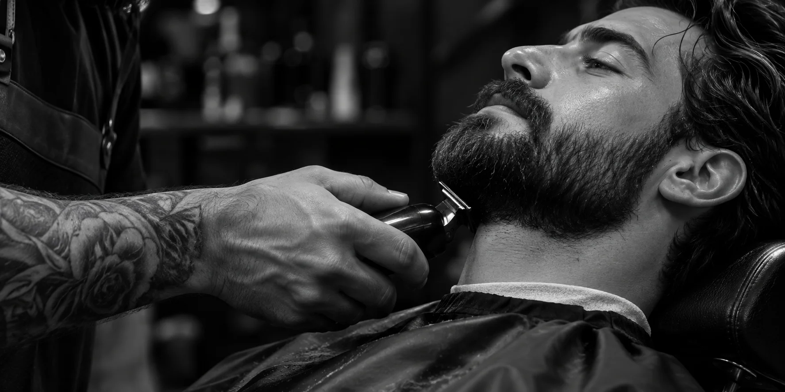
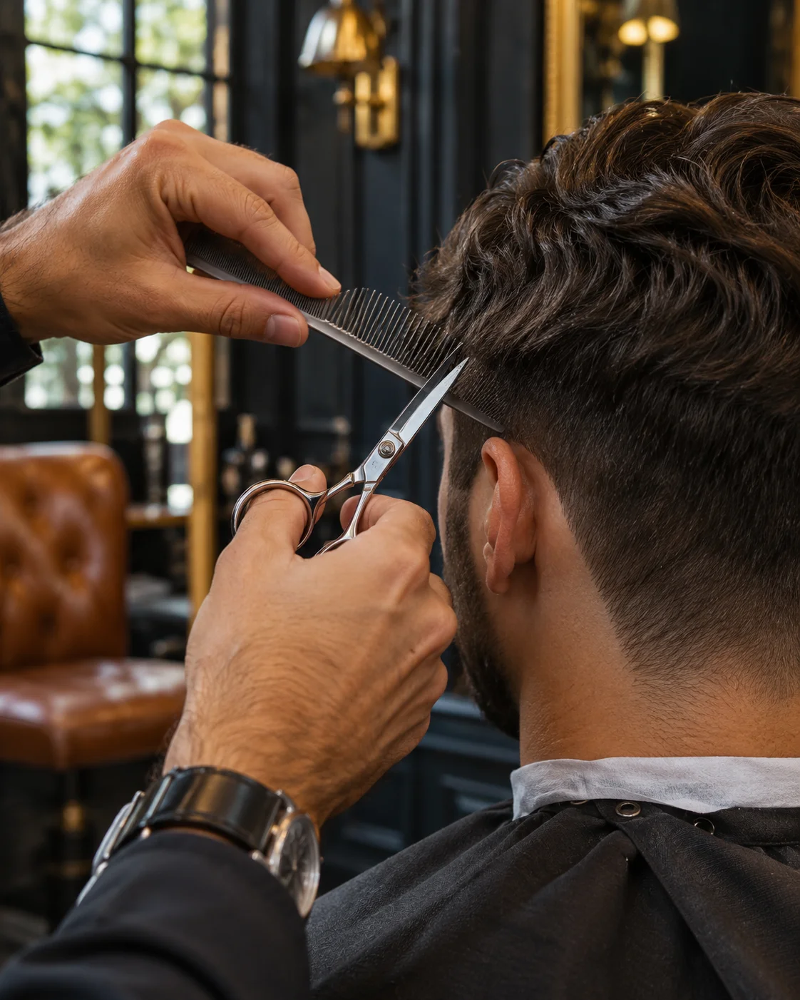
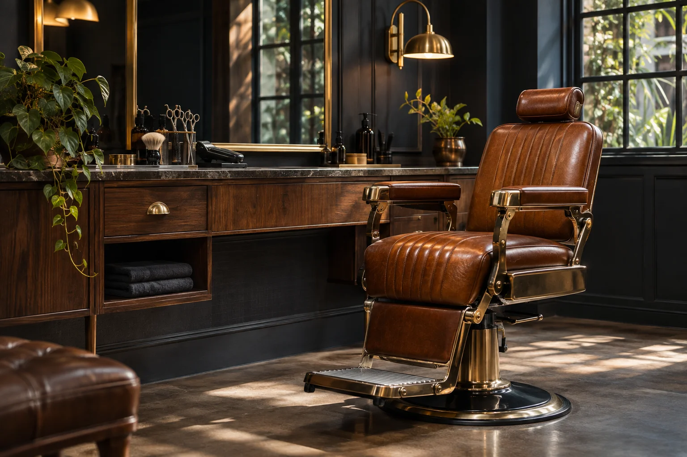

Corte masculino
Corte masculino personalizado, com acabamento e ajuste ao estilo de cada cliente.
- Duração
- 30 min
- Valor
- 190,00 R$
Conheça os nossos serviços e encontre o atendimento que combina com você. Escolha seu horário e reserve um momento para o seu estilo.
Seu estilo. Sua experiência.




Na HighTop, acreditamos que cuidar do visual é também uma forma de expressar personalidade. Um corte, uma barba ou um novo estilo podem acompanhar uma mudança de fase, renovar a confiança ou simplesmente fazer parte de uma rotina de cuidado. Nossa proposta é valorizar esse momento, respeitando as escolhas e a individualidade de cada pessoa.
O estilo de cada cliente é o ponto de partida. Em vez de tratar todos os visuais da mesma maneira, buscamos uma experiência orientada pelo diálogo: entender a preferência, conhecer a referência e alinhar o que se espera do atendimento. A ideia é que você encontre espaço para manter o que gosta ou explorar uma nova possibilidade com mais clareza sobre o serviço escolhido.
Para nós, atenção aos detalhes começa antes do atendimento. Por isso, apresentamos os serviços com descrição, duração e valor, permitindo que você conheça as opções antes de reservar. Essa transparência ajuda a organizar a escolha e a construir uma relação baseada em expectativas bem alinhadas, respeito e comunicação.
Também acreditamos que o seu tempo merece cuidado. O agendamento online foi pensado para tornar a reserva mais simples: você consulta os serviços, escolhe o atendente e encontra os horários disponíveis para a data desejada. Todas as referências de horário seguem o fuso de Brasília, facilitando a organização do seu dia e evitando diferenças entre a reserva e a agenda.
Nossa visão de atendimento combina estilo, praticidade e respeito. Queremos que a experiência seja clara desde o primeiro contato, com informações acessíveis e liberdade para escolher o serviço que faz sentido para você. Mais do que seguir uma tendência, a proposta da HighTop é ajudar cada cliente a encontrar uma forma de se apresentar com autenticidade.
A relação com quem nos escolhe também faz parte dessa proposta. Escutar preferências, esclarecer dúvidas e acolher sugestões são atitudes que orientam a experiência que desejamos construir. Cada visita representa uma oportunidade de conhecer melhor o cliente e compreender como o cuidado com a imagem pode acompanhar sua rotina.
Se você está conhecendo a HighTop agora, explore os serviços, confira os detalhes e escolha o seu próximo horário. Será um prazer fazer parte do seu momento de cuidado. Seu tempo. Seu estilo. Sua experiência.
Corte masculino personalizado, com acabamento e ajuste ao estilo de cada cliente.
Combinação de corte masculino e barba, com alinhamento, desenho e acabamento.